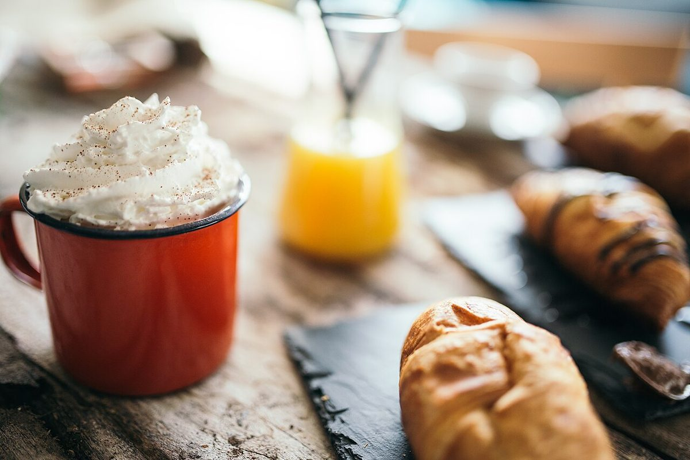
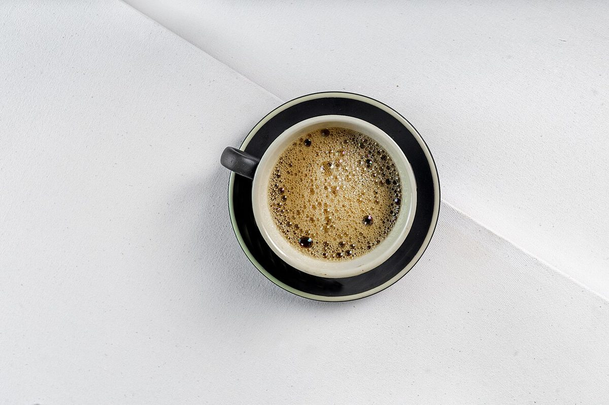
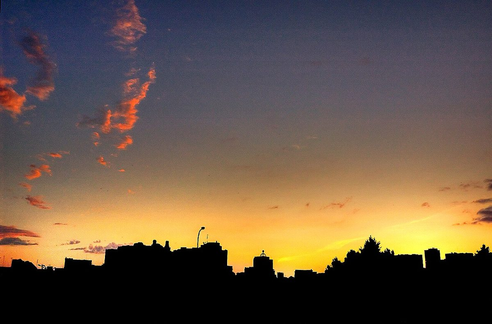

ちょっと寄り道、ひと息
宮城県多賀城市のカフェ、Bookcafe SAFARI(ブックカフェ サファリ)。気になることは、お電話かInstagramで気軽に聞いてみてください。
※「ちょっと寄り道、ひと息」は制作側の案です。
掲載写真はフリー素材のイメージで、店舗の実際のものではありません。他地域で撮影されたものや撮影地が不明なものを含みます。
このサイトについて
これは、Bookcafe SAFARIさんをイメージして制作した試作サイトです。営業時間・メニュー・料金などの詳しい情報は、現在準備中(お問い合わせください)です。



知りたいことは、直接どうぞ
詳しいことは、お電話でお問い合わせください。Instagramもご覧ください。